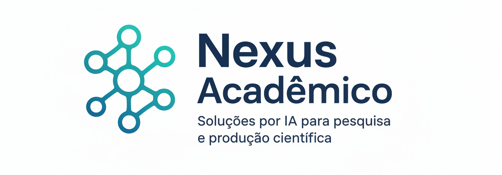
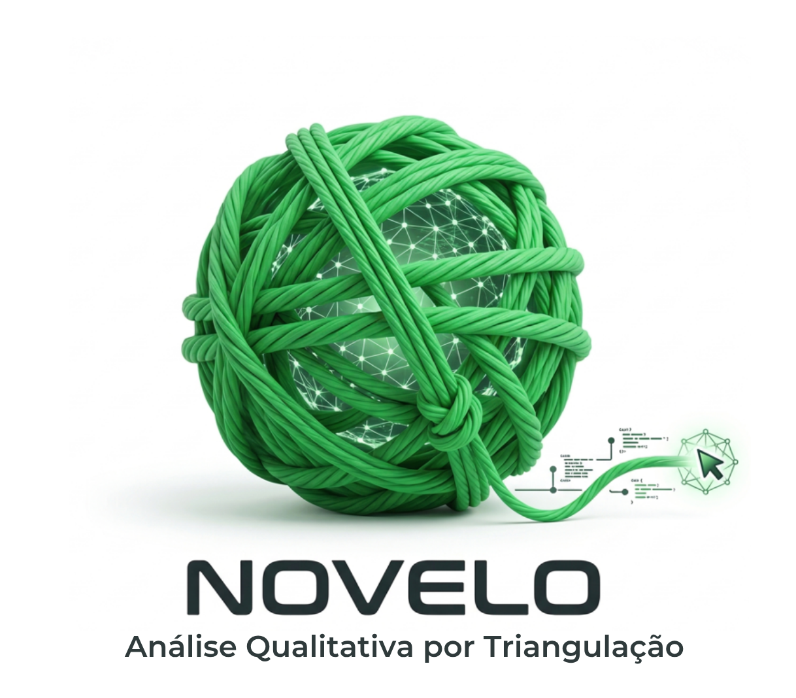
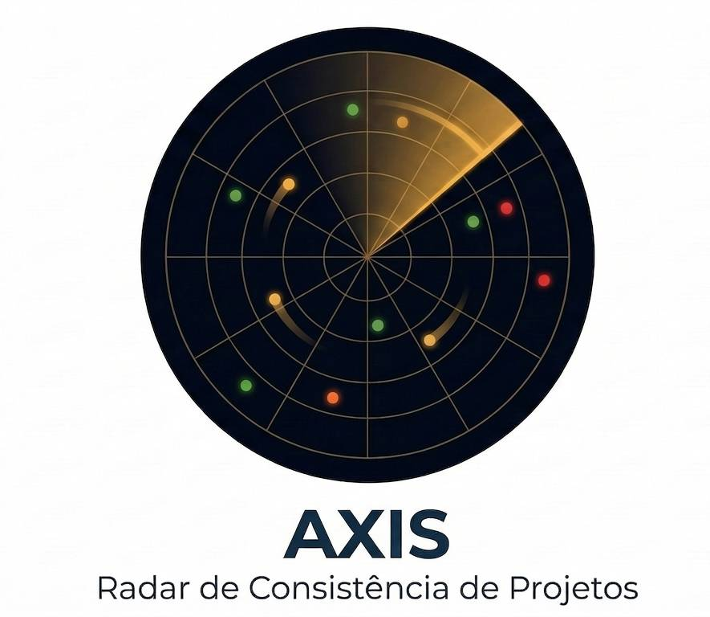

Ecossistema de aplicações para estruturação analítica, triangulação metodológica e auditoria de pesquisas acadêmicas, apoiado por inteligência artificial.
Por que utilizar o Nexus?
Estruture sua pesquisa com maior consistência metodológica, rastreabilidade analítica e controle das etapas de produção científica.
Utilize aplicações que organizam dados, estruturam análises e avaliam a coerência do trabalho acadêmico ao longo do desenvolvimento da pesquisa. As soluções são apoiadas por modelos de inteligência artificial de raciocínio avançado e, em alguns casos, por arquiteturas multiagentes voltadas à validação metodológica, triangulação analítica e auditabilidade científica.
TRAMA
Análise Semântica e Estrutura Discursiva
NOVELO
Triangulação e Análise Qualitativa
AXIS
Auditoria de Consistência de Projetos
Artigo Quantitativo
(aplicação em desenvolvimento)
Artigo Qualitativo
(aplicação em desenvolvimento)
Escala PEDro
(aplicação em desenvolvimento)
Acesse as aplicações conforme sua necessidade
Escolha TRAMA, NOVELO ou AXIS e ative o passe ideal para sua demanda.
(ou 15 dias, o que ocorrer primeiro)
TRAMA
Mapa Semântico do Discurso
O TRAMA é um sistema fundamentado em estatística multivariada e processamento de linguagem natural. Projetado para a análise quanti-qualitativa de dados textuais, o sistema converte amplos corpora discursivos em mapas semânticos e redes de similitude. A ferramenta auxilia na estruturação de volumes extensos de texto e na identificação de padrões lexicais, com o propósito de apoiar a sistematicidade e o rigor metodológico na pesquisa qualitativa.

NOVELO
Análise Qualitativa por Triangulação
O **NOVELO** é um motor de análise hermenêutica voltado à triangulação de dados qualitativos por meio de métodos validados como Bardin, DSC e Análise Temática. A plataforma aplica escrutínio epistemológico às narrativas, mapeando a saturação teórica e elaborando sínteses dialéticas que tensionam contradições estruturais. Atuando como um auditor interno de coerência, o sistema auxilia na identificação de sentidos latentes com foco no rigor e na sistematicidade metodológica.

AXIS
Radar de Consistência de Projetos e Síntese Plataforma Brasil
O AXIS atua como uma camada inteligente de auditoria para projetos acadêmicos. Mais do que validar o alinhamento lógico, a plataforma escrutina transversalmente o método, a ética, os instrumentos e a viabilidade. Inclui o Maestro para roteiros de reescrita e o inovador Síntese Plataforma Brasil, que traduz o seu método para linguagem leiga e audita o seu TCLE automaticamente.
Estrutura e Funcionalidades do Trama
Do controle do vocabulário à estatística espacial avançada.
Redes Semânticas e Causais
Visualização interativa da estrutura do discurso e mapeamento de relações de causa e efeito para construção de hipóteses fundamentadas.
Léxico e PLN
Extração automática de conceitos-chave e termos compostos por meio de Processamento de Linguagem Natural (PLN) de alto rigor.
Estatística Espacial
Análise multivariada rica: Grafos de Similitude, Redução Dimensional e motor de análise espacial para distribuição de fenômenos.
Modelagem de Tópicos (LDA)
Descoberta indutiva via Inteligência Artificial que identifica temas estruturais latentes no texto e sugere rótulos acadêmicos precisos.
Estrutura e Funcionalidades do Novelo
Análise qualitativa assistida com foco em evidência material e saturação.
Saturação Teórica Material
Cálculo matemático do platô de categorias para justificar objetivamente o encerramento da coleta de dados.
Análise Temática e de Conteúdo
Motor assistido para codificação e categorização sistemática de falas sob o rigor do método de Bardin e Análise Temática.
Discurso do Sujeito Coletivo
Processamento de depoimentos para a construção de figuras metodológicas de pensamento coletivo (DSC).
Fichamento Inteligente
Extração de conceitos centrais e organização de revisões de literatura com suporte de Inteligência Artificial.
Estrutura e Funcionalidades do Axis
Auditoria 360° e blindagem metodológica para projetos de pesquisa.
8 Radares de Auditoria
Escrutínio completo com 6 radares essenciais (Coerência, Ética, Fundamentação, Instrumentos, Bibliometria e Viabilidade) e 2 opcionais (ODS e Produto Técnico/CAPES).
Maestro de Reescrita
Diagnóstico integrado com um plano de ação prioritário, fornecendo sugestões de reescrita (Alternativas A e B) para a correção de falhas metodológicas estruturais.
Kit Plataforma Brasil e TCLE
Geração automática de resumos leigos, fragmentação metodológica para o CEP e auditoria forense do TCLE, cruzando os riscos do projeto com as normas do CNS.
Simulação de Banca
Arguição dialética socrática baseada em diferentes lentes epistemológicas para testar a robustez e a defesa teórica do projeto antes da qualificação.
Para quem é o Nexus Acadêmico?
Desenhado para pesquisadores e estudantes que exigem produtividade em escala sem abrir mão da auditabilidade e do rigor científico.
Pesquisadores e Orientadores
Escale sua produção científica sem perder o controle. Obtenha rastreabilidade sobre o uso da IA para fortalecer o rigor científico.
Mestrandos e Doutorandos
Aprimore a consistência metodológica da sua tese. Estruture análises qualitativas com suporte em indicadores de saturação e utilize simulações de arguição para avaliar a robustez do trabalho.
Grupos de Pesquisa e Projetos Financiados
Assegure a coerência transversal das suas propostas. Escrutine orçamentos, cronogramas e fundamentos teóricos para fortalecer a coesão do projeto e aprovação em editais.
O Poder Analítico em Ação
Conheça os relatórios e visualizações gerados pelas aplicações do ecossistema Nexus.


← Deslize para ver mais ferramentas →